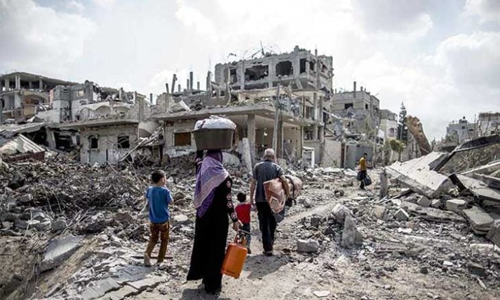
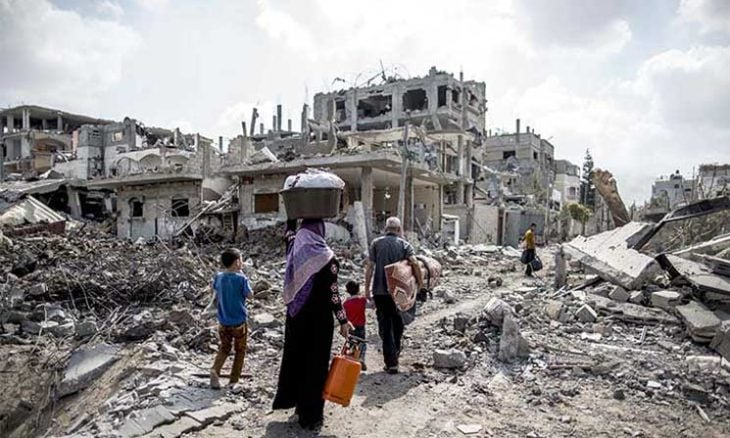

What Happened in Palestine ?
What happened
Can I steal my neighbor's car and then give it to you and tell you it's yours? Of course not, I don't own it, and I have no right to dispose of it. They did that. They gave the land of Palestine to groups of outcasts under the slogan “A land without a people for a people without a land” in 1917 in what was called the Balfour Declaration.
These outcast groups, loaded with weapons, coveted the entire land, so they began to commit massacres one after another, emptying some villages and areas of their indigenous inhabitants, and terrorizing the neighboring residents and pushing them to abandon their lands and flee for their lives.
After that came the Nakba and its horrors and what it did to the Palestinians in 1948 When they said, “Go out temporarily and you will come back later.” , followed by the Nakba in 1967.All this while we were talking about the most prominent stages in the Palestinian tragedy, and we did not mention the displacement and massacres that befell them even in refugee camps, even after they forcibly left their homes and lands. We did not mention someone who lived in a house, between loving parents and brothers, and owned lands, fields, and money, and suddenly became a refugee with no money or a home. Perhaps he is lucky because he still has two parents, or at least one of them, and part of his brothers, to share with him the refugee tent and its bitterness.
If you were born in Gaza shortly before 2007, you'll know what I'm talking about. You will remember when the Kinder Egg candy, with its brightly colored wrapper and distinctive taste, which carried a toy inside, began to disappear from the markets. Yes, that is the period in which life imprisonment for everyone inside the Gaza Strip began.Since then, Gaza has been suffering from woes. The matter is not limited to poor living conditions, asylum, and high population density inside the largest prison in the world, but there are also wars. Yes, that brutal occupation not only isolated them from the world, but also waged hideous wars against them.
عملية الرصاص المصبوب/معركة الفرقان
2008 - 2009
Duration
23 days
Victims
1430
عمود السحاب/حجارة السجيل
2012
Duration
8 days
Victims
180
الجرف الصامد/العصف المأكول
2014
Duration
51 days
Victims
2322
معركة صيحة الفجر
2019
Duration
4 days
Victims
34
حارس الأسوار/سيف القدس
2021
Duration
14 days
Victims
250
الفجر الصادق/وحدة الساحات
2022
Duration
3 days
Victims
24


 

The most horrific, most destructive and deadly wars. The world has never witnessed such cruelty before, an unbelievable amount of lying.
طوفان الأقصى/السيوف الحديدية
2023
Duration
54 days+
Victims
15,000+
War wounded
35,000+
the lost
7,000+
refugees
1,5 million+
West Bank victims
200+
Prisoners since the beginning of the war
3290+
It happened, it happens, and it will happen
In the West Bank
They are pursuing a policy of killing, destruction, sabotage and frequent raids, as they do in Jenin, Tulkarm, Nablus and all West Bank cities, where they restrict citizens' livelihoods. They hinder the simplest daily activities and isolate cities from each other.
In Gaza
The story did not begin on October 7, but much before that,Wars against Gaza have always been waged for weak reasons, but perhaps this time for a strong reason. In previous wars, they did not drop roses from the sky on Gaza, and they never will.
In Palestine
They do not differentiate between fighters, children, defenseless citizens, journalists, ambulance crews and doctors.
once again
The same catastrophe that occurred 75 years ago is being repeated today in front of the whole world, even though we are in the year 2023 and we live in a world that claims peace. Whoever can change this bitter reality is watching silently, doing nothing, or contenting himself with condemnation and panic.
in the past(in 1948)
now(in 2023)
No water
No health care
No electricity
No fuel
No sleep
No food
No internet
No bread
The truth became clear to the world after 75 years..
"They discovered many lies"